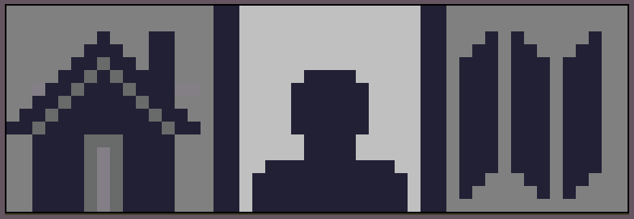
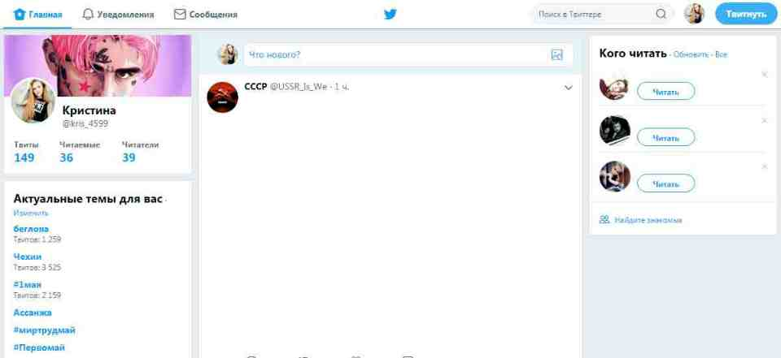

Всё о Twitter |
|
Twitter определение |
Тройка лидеров и пять популярных событий Шесть причин для ретвита и основные факты |
|

История Устройство Особенности Как пользоваться Правила твиттера Возможности Фотографии Словарь Карта сайта Об авторе |
Как пользоваться твитеромТвиттер есть у всех, даже у Медведева… что? У вас все еще нет? Тогда читайти мои статьи, где расскажу вам как зарегистрироваться и опубликовать первый твит. Зачем нужен "Твиттер"? Чтобы общаться! Существуют некоторые правила, позволяющие понять принцип опубликования так называемых "твитов". На самом деле все очень просто. Пользователь первым делом должен зарегистрироваться (о принципах регистрации немного позже). После этого у него появится свой аккаунт. Заполнение профиля занимает несколько минут. Далее человек может в любой момент авторизоваться в предложенной социальной сети, а затем оставить короткое сообщение в своем микроблоге. После того, как вы зарегистрировались в твиттере, вы попадете на главную страницу .
В центре расположена
лента новостей. Слева расположена информация о вас: ваши твиты , читаемые
(те, кого вы читаете) и читатели. Ниже актуальные темы для вас.
Справа вы увидите раздел "кого читать". Для примера вот моя главная страница в твиттере:  |